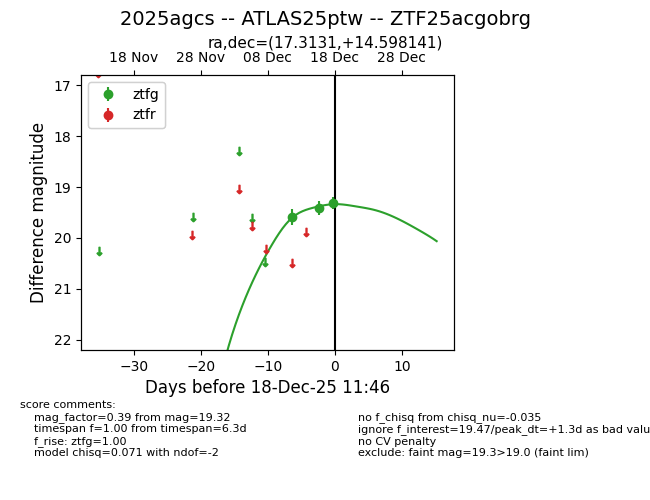
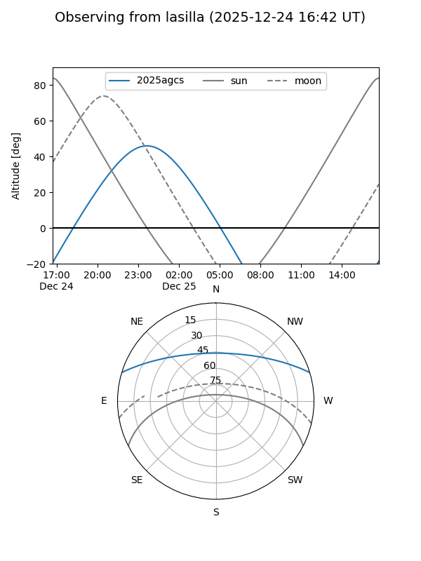
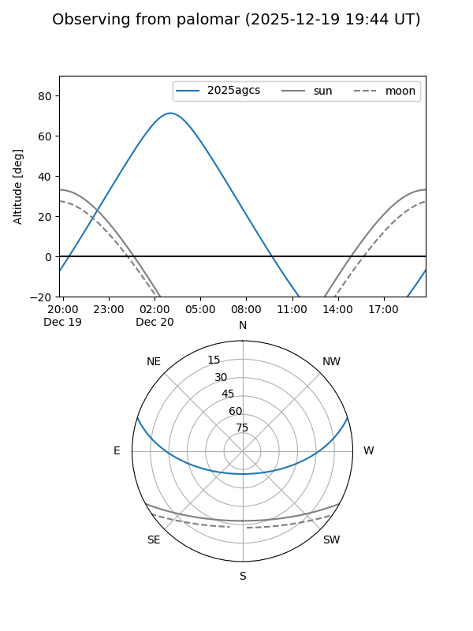
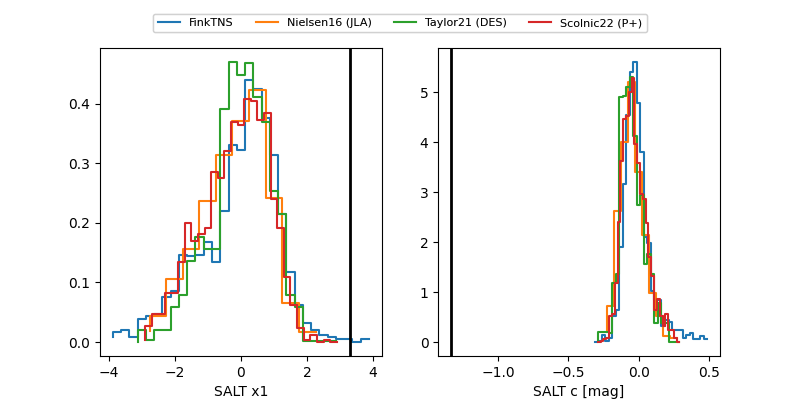

2025agcs
Target 2025agcs at 2025-12-18 11:47
Aliases and brokers:
FINK: fink-portal.org/ZTF25acgobrg
Lasair: lasair-ztf.lsst.ac.uk/objects/ZTF25acgobrg
ALeRCE: alerce.online/object/ZTF25acgobrg
TNS: wis-tns.org/object/2025agcs
YSE: ziggy.ucolick.org/yse/transient_detail/2025agcs
alt names
ZTF25acgobrg (ztf,fink_ztf)
2025agcs (tns,yse)
ATLAS25ptw (atlas)
Coordinates:
equatorial (ra, dec) = 17.3131,+14.59814
equatorial (HMS+DMS) = 01:09:15.14,+14:35:53.31
galactic (l, b) = (129.3863,-48.05023)
Photometry
last ztfg=19.32
3 ztfg detections
Lightcurve

Visibility


Additional plots
